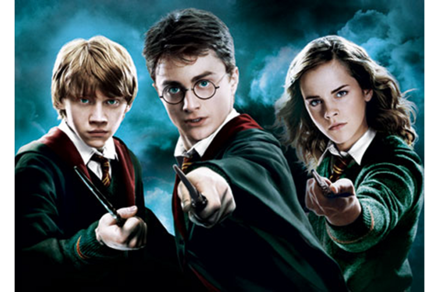
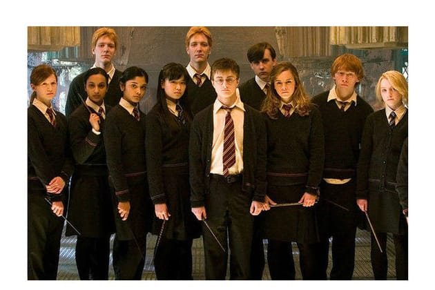

IMAGES
 
Harry Potter is the main protagonist of the Harry Potter Series. He is a half-blood, the son of James Potter and Lily Potter and the only known survivor of the killing curse (Avada Kedavra) He lives on Number 4 Privet Drive with his muggle (non-magical) and mean aunt, uncle and cousin. At the age of 11 he gets his letter to Hogwarts School Of Witchcraft and Wizardry. At Hpgwarts he is sorted into Gryffindor, the house for he brave and chivoulrous after which all his adventures begin.
Ronald Weasley is the main protagonist of the Harry Potter series. He is Harry's best friend and is a part of his adventures. Ron is a pure-blood, the son of Arthur Weasley and Molly Weasley. He has seven siblings namely Bill Weasley, Charlie Weasley, Percy Weasley, Fred and George Weasley and Ginny Weasley. At the age of 11 Ron gets his letter to Hogwarts where he meets Harry on the trainn after which the two became very good friends. Like Harry, Ron was also sorted into Gyffindor
Hermione Granger is the main protagonist of the Harry Potter series along with Ronald Weasley and Harry Potter. She is a muggle-born the daughter of Mr and Mrs Granger. She was very bright from an early age and was the smartest girl in her muggle school. At the age of 11 she got her acceptance letter to Hogwarts but since she knew nothing of the wizarding world back then, Professor Minerva McGonagall visited her to explain her and her parents about the wizarding world and Hogwarts. Hermione was the brightest among her friends and according to her third year, Defence Against The Dark Arts Professor, the brightest witch of her age. She met Harry and Ron on the Hogwarts Express but back then neither of them liked the other but when Harry and Ron saved her from the Mountain Troll the three became inseperable. Like Harry and Ron even she was sorted into Gryffindor.
Draco Malfoy is one of the characters in the Harry Potter Series. He comes from a long line of pure-bloods and is very proud of his parentage. He is the son of Narcissa and Lucius Malfoy. At Hogwarts he is sorted into Slyrtherin. At first he tries to befriend Harry on his father's orders but Harry rejected the friendship after which the became arch-enemies. In his 6th year Draco becomes one of Voldermort's Death Eater's and Voldermort gave him the impossible task of killing Albus Dumbledore, the most powerful wizard in the world. Draco married Astoria Greengrass and has a son, Scorpius Malfoy.
Neville Longbottom is one of the characters of the Harry Potter series. He is a pure-blood, the son of Frank and Alice Longbottom both who were tortured and driven to insanity by Bellatrix Lestrange for information on Voldermort. This had a huge negative impact on Neville and he was always scared much to the dismay of his grandmother. Neville didn't show many signs of being a wizard and his grandmother was afraid that he was a squib tried many methods to force his magic out of him. At the age of 11 he got his Hogwarts Acceptance letter and went to Hogwarts. The Sorting Hat saw a great deal courage hidden behind his fear in Neville and sorted him in Gryffindor even though Neville begged to be put in Hufflepuff. Neville was very talented in Herbology. His greatest fear was Professor Severus Snape as shown when he practiced the boggart-banishing charm. Neville showed his true courage in his 5th, 6th and 7th year when he helped Harry in the Battle in the Ministery of Magic and then the Battle Of Hogwarts where he killed Nagini, one of Voldermort's horcruxes
Albus Dumbledore is one of the characters of the Harry Potter series. He is a half-blood, he son of Percival and Kendra Dumbledore and the brother of Aberforth and Ariana Dumbledore. He was the most powerful and one of the most respected wizards of all time. He was the former headmaster of Hogwarts School of Witchcraft and Wizardry. Not much is known of Dumbledore's past. He was once a friend of Gellert Grindelwald and they both once had an ambition of finding the Deathly Hallows and become the Masters Of Death but after his sister's death Dumbledore realized all his mistakes. He blamed himself for his sister's death and lived with the remorse all the years. He was given the oppurtinity to become Minister Of Magic thrice but declined because he knew that power wasn't meant for him. He was very brilliant and was also Master of the Elder Wand until Draco Malfoy disarmed him and becamed the new master. He was killed by Severus Snape during the Battle on The Astronomy Tower.
Ginny Weasley is a pure-blood and the daughter of Molly and Arthur Weasley. She is the youngest of the seven Weasley's and the only girl. She got her acceptance letter to Hogwarts when she was 11 and had some trouble during her first year. She found a diary of Tom Marvalo Riddle, also known as Voldermort. It was horcrux but little Ginny didn't know that back the. Shhe poured her heart to the diary, telling it all her secrets. The more she wrote to the diary,the more vulnerable she became to its power until it started to possess her. In the end Harry saved Ginny and destroyed the diary. In her 4th year, Ginny was part of Dumbledore's Army, a club which Harry started to teach his classmates Defence Against The Dark Arts. She also fought in the Battle in the Department Of Mysteries though she broke her ankle in the fight. She also fought in the Battle of the Astronomy Tower and in her 6th year at Hogwarts she along with Neville Longbottom and Luna Lovegood re-opened Dumbledore's Army. She also fought in the Battle of Hogwarts against Bellatrix Lestrange in which she was almost killed. She married Harry Potter and has three kids James Sirius Potter, Albus Severus Potter and Lily Luna Potter.
Luna Lovegood is the daughter of Xenophilius Lovegood and Mrs Lovegood. She is described to have dirty, blonde air and silvery grey eyes. She is a Ravenclaw and is a little weird. Luna was often teased and bullied for her weirdness. She is very calm and kind. She is also smart though most people don't notice this at first sight. She and her father believe in a dozen of creatures which most peple believe are make-believes. Some of those creatures include Nargles, Wrackspurts and the Crumple-Horned Snorcack. Even though she is extremely odd Luna is a very close friend of Harry's and also helped him in his journey.
Luna Lovegood is the daughter of Xenophilius Lovegood and Mrs Lovegood. She is described to have dirty, blonde air and silvery grey eyes. She is a Ravenclaw and is a little weird. Luna was often teased and bullied for her weirdness. She is very calm and kind. She is also smart though most people don't notice this at first sight. She and her father believe in a dozen of creatures which most peple believe are make-believes. Some of those creatures include Nargles, Wrackspurts and the Crumple-Horned Snorcack. Even though she is extremely odd Luna is a very close friend of Harry's and also helped him in his journey.